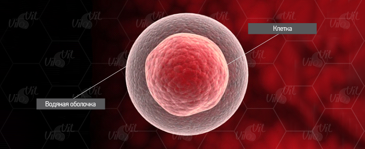
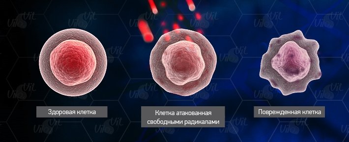
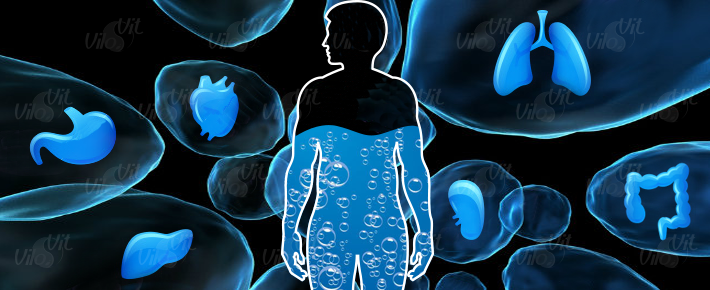
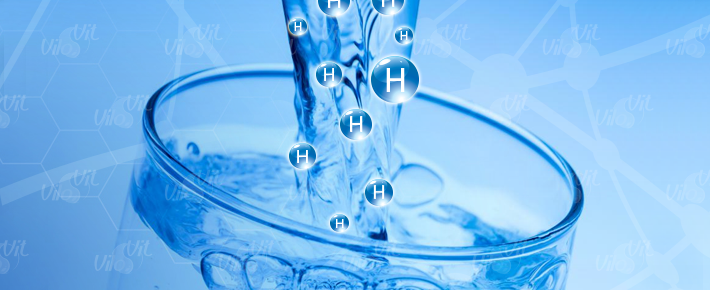

- главная
- клеточная вода
+ 7 (495) 64-111-63
info@vilovit.ru
Стержень Виловит® Источник Вашего Долголетия!
Вода в организме.
Всем известно, что вода – это наиважнейший элемент для всего живого на земле, и человек не является исключением. Жизнеспособность всех клеток напрямую связана с водой: организм без нее не сможет существовать. Для нормальной работы всех систем организма человек должен выпивать не менее полутора литров воды в сутки.
Все мы знаем, что вода очень важна для жизнедеятельности человека, но теперь стало понятно, что функционирование всего живого напрямую связано с водой. Если клетка постоянно будет находиться в этой субстанции, то будет способно регенерировать и обновляться.
Клеточная вода – материал для самостоятельного обновления организма человека. При ее помощи осуществляется обмен питательных веществ, а соответственно, осуществляется и хорошая работоспособность.
Известный биохимик Алекс Карл утверждает, что клетка бессмертна!
Алекс Карл (получивший Международную Премию Альфреда Нобеля за продление жизнеспособности в клетках сердца цыпленка на протяжении 34 лет) написал в своей диссертации следующее: «Клетка не умирает, она бессмертная. Вся причина проблемы состоит в жидком субстрате. В нем она находится и вырождается».
У воды очень много ролей имеющих большое значение. Она ответственна за производство гидроэлектричества и энергопроцессы организма. При ее переизбытке она выводится в виде мочи, а не застаивается. А если потреблять не обыкновенную, а «Живую воду» обогащенную водородом, то этот процесс будет происходить намного быстрее и эффективнее.
Функции воды в организме
- С помощью воды перемещаются кровяные клетки.
- Действует как растворитель важных для жизнедеятельности человека веществ, в том числе кислорода и минералов, которые притормаживают увязание организма.
- Соединяет твердые части клеток и формирует вокруг каждой из них мембрану. При обезвоживании эта работа выполняется холестерином.
- Без препятствий проникает через мембрану клетки, чем приводит в активность ионные насосы. Это крайне важное преимущество у воды, так как именно от скорости нейропередачи и быстрого перемещения элементов зависит нормальное функционирование мозга.
- При любом типе отравления ее используют для промывания желудка. Также ее употребляют для выведения ядов из организма.
- Повышает иммунную систему.
- Защищает ДНК от повреждений. Во время регенерации снижает аномалии ДНК.
- Растворяет пищевые продукты, витамины и минералы.
- Содействует процессам обмена веществ и усвоения.
- Попадая в клетку, вода начинает наделять ее кислородом, а переработанные газы выводит из организма.
- Является усилителем дееспособности красных клеток в крови и накопителем кислорода в легких.
- Вода – главная смазочная субстанция в щелях суставов, благодаря ей предотвращается артрит и болевые синдромы в спине.
- Содействует устранению отходов.
Сокращение воды в организме
У младенца, только что появившегося на свет, воды в организме 86,8% от веса тела. Немного подросший ребенок содержит 71% воды. У молодого мужчины ее – 61%, а у старого человека только 49,8%. Чем старше возраст человека, тем менее в нем содержится клеточной воды. Это неудивительно, так как ежедневно из организма выводится не менее двух литров воды в виде мочи (человек теряет примерно 300 – 400 миллилитров). Так же вода выходит через кожу в виде потоотделений (до 550 миллилитров). И через пищеварительный тракт всего до 150 миллилитров. Но, к сожалению, в современном мире человек потребляет малое количество жидкости, что приводит к раннему старению кожи и другим проблемам.
Стоит отметить, что вода – это среда обитания для клеток, и если ее будет недостаточно, то клетки начинают морщиться, прекращают функционировать, а затем и вовсе гибнут. Поэтому рекомендуется употреблять много воды, ведь она является главной жидкой субстанцией для клетки.
Считается, что старость определяется не по численности больных клеток в организме, а по содержанию воды в них. Старость можно сравнить со своего рода засыханием (нарушением водного баланса), в принципе, это и есть ее суть. Итогом этого становятся нарастающие процессы внутриклеточного окисления, что приводит к гибели клетки.
Когда клеточная вода начинает уменьшаться в организме, начинается подавление работоспособности органов, выводящих воду из тела: почки, дерма, легкие, пищеварительная система. Дефицит воды приводит к болям, затрудненному выведению каловых масс, поносу, секретной недостаточности и другим недугам. Человек постепенно «усыхает» из – за того, что клеточная оболочка разрушается свободными радикалами, а так же по причине того, что человеческий организм вырабатывает «водород» из клеточной воды, который оказывает сопротивление «активному кислороду».
Во время процесса биоокисления образовывается множество протонов (всего их 24). 12 из них образуются из - за окисления молекул глюкозы. Вторая дюжина за счет молекул воды, впоследствии, в нашем организме количество клеточной воды становится меньше. Этот процесс был открыт в 19 веке русским биохимиком В.Паладиным.
Последствия дефицита воды
Место погибшей клетки замещается соединительной тканью, которая создает препятствие току крови через органы, что приводит к повышению кровяного давления. Соединительная ткань и сама отдает воду на производство протона водорода, что ведет к ее разрастанию и расширению, а значит, к активации склеротического процесса. Этот процесс называется «склерозом». Но еще до того, как склеротическая соединительная ткань займет место клетки, последняя может принести организму различные заболевания.
Снижение функции органов с помощью центральной нервной системы носит название «частичной нервно-рефлекторной блокады органов». Склеротическое разрастание соединительной ткани закрепляет эту блокаду уже органически. В силу роста дефицита воды растет и степень нервно-рефлекторной и склеротической блокады органов. Органы начинают выполнять свои функции все хуже и хуже. Это приводит к появлению различных заболеваний.
Поджелудочная железа, ее эндокринная часть, которая вырабатывает глюкагон и инсулин. При сморщивании мембраны этих клеток, затрудняется ввод и вывод через нее различных веществ. И в том числе инсулина. А если эти клетки начнут замещаться соединительной тканью, так и тем более возникнет дефицит этого гормона, а с ним и сахарная болезнь, и т. д.
Блокада печени, перестает нормально выводить в составе желчи билирубин, холестерин, жирные кислоты и др. Это приводит к следующим результатам: возникает бессонница, климакс, психозы вплоть до шизофрении, усиливается атеросклероз сосудов, снижается иммунитет, растет жировая дистрофия органов. Холестерин служит исходным материалом для строительства некоторых гормонов и клеточного синтеза. Вещество полезное. Но при блокаде печени, которая выводит холестерин из организма в составе желчи, он начинает откладываться во всех органах и тканях. И, в частности, такое отложение идет на стенках сосудов, играя немаловажную роль в процессе атеросклероза, и на самой клеточной мембране, усиливая блокаду последней.
Блокада почки не позволяет организму полноценно очищаться от мочевой кислоты аммиака, мочевины, что приводит к самоотравлению организма, выражающемуся в плохом настроении, возникновении различных психических заболеваний. При блокаде почек мочевая кислота соединяется с кальцием костей и мышц, выпадает в них нерастворимой солью, мочекислым кальцием, вызывая страшное заболевание – подагру.
Блокада толстой кишки приводит организм к самоотравлению отходами и шлаками жизнедеятельности, из которых кишечник сформировывает каловые массы.
Склеротическая и нервно-рефлекторные блокады органов направлены на сохранение воды в организме, что приводит к неблагоприятным результатам. Нервно-рефлекторная блокада с органа на орган развивается за счет центральной нервной системы. Однако самостоятельно она продержаться долго не сможет из-за опасности срыва (вследствие перевозбуждения нервной системы).
Блокады, нарастающие с течением времени, приводят к появлению внешних и внутренних признаков старения организма. Так, наша кожа сморщивается, чтобы меньше выводить пота, и мы покрываемся складками старости, склерозируются почки, легкие, пищеварительный канал.
Восстановление клеточной воды с ВилоВит.
По причине потери воды жизнь человека сокращается. Что необходимо сделать для того, чтобы спасти ее? Необходимо сократить потерю воды. Поэтому для нормального функционирования всех систем организма человека рекомендуется ежедневно потреблять как минимум полтора – два литра воды в сутки. Если потреблять «Живую воду» (водородную), то организм не только быстро ее усвоит, но и получит хороший антиоксидант, что улучшит работу всех систем.
«Живая вода» насыщенная водородом при помощи «ВилоВит» имеет уникальные свойства, потому что ее характеристики близки к показателям внутренней среды человека. В итоге нам не приходится затрачивать электроэнергию мембран клеток для того, чтобы исправить активность электронов воды.
В чем заключается функция магниевого стержня ВилоВит?
Если его опустить в воду, то он начинает насыщать ее водородом, который, как было написано немного выше, является природным антиоксидантом. В итоге получается «Живая вода» с идеальным для организма человека показателем - ОВП -50мВ…-250мВ и Рн 7,5…9. Поскольку конкретная причина старения – потеря воды, то прием «Живой воды» имеет омолаживающее и оздоровительное действие. Также стимулирует производительность биоэнергии, образующаяся доза которой настолько велика, что имеет способность регенерировать поврежденные клетки и ткани.
Прием водородной воды способствует оптимизации баланса воды в организм: клетки и ткани насыщаются ровно настолько, насколько это требуется. При этом обмен веществ не нарушается.